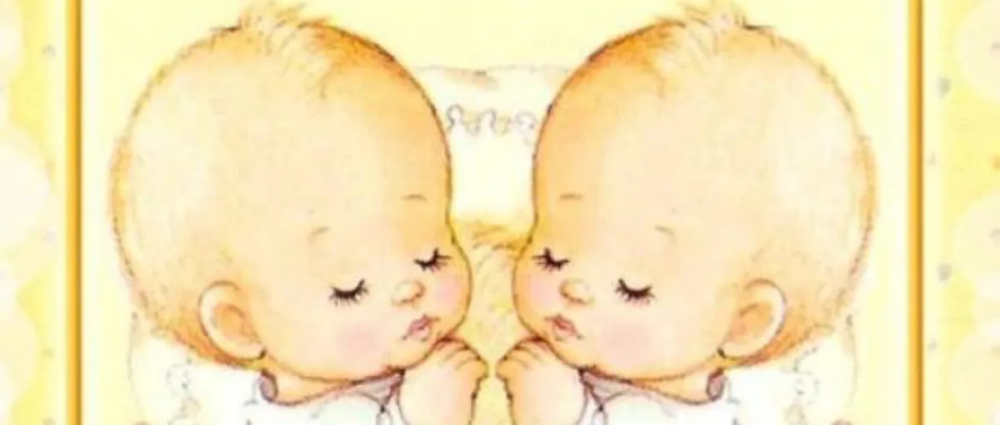
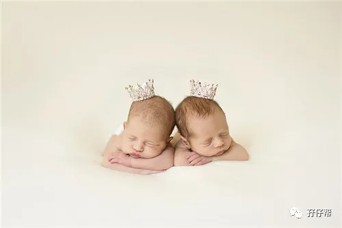
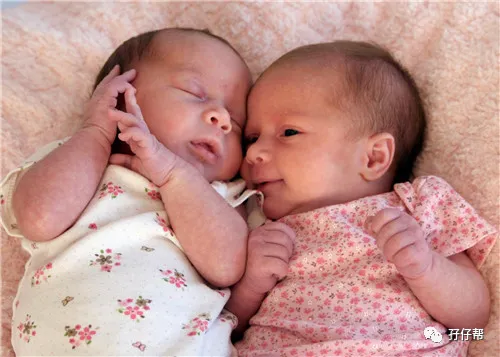
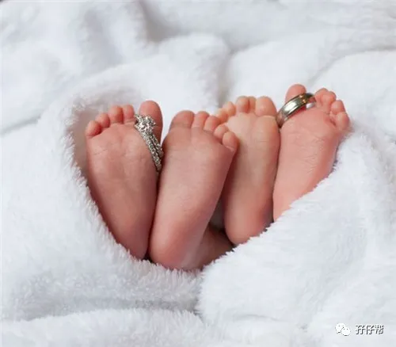

文|圆圈妈，一个文思如尿崩的双胎妈妈
图|来自网络，如有侵权，请联系删除
· 正 · 文 · 来 · 啦 ·
也许是双胞胎的原因，
我经常被小区的大妈大婶逮住，
然后轮流给我加油打气，
大概意思就是：
“姑娘，忍一忍，过了三个月就轻松很多了！”
好在，我并没有当真。
那些说..
生完之后就解放，
出了月子就会好过点，
过了三个月就会轻松...
过来人，谢谢好意！
我想，我们不一样！
比如，你们的宝宝3个月就能一觉睡到大清早，
而我家的两个货依然在睡渣路上，
无法自拔！
今天的推文主题：
浅谈4月龄的双胞胎睡眠特点
以下文字节选自《双胞胎睡眠圣经》第二部分第五章：不同年龄段儿童对睡眠的不同需求。
预产期过后的13~16周,即3-4个月期间,孩子们每天的睡眠总需求时间较之前基本没有什么太大变化,可能偶尔他们会在晚上多睡上半个小时,或者在白天少睡上片刻,基本可以忽略不计。
不过,虽然总体看起来没什么变化,但孩子们身体内部的生物钟系统在这期间会对日间小睡起到很大的自我调节作用,并最终帮助孩子们建立起相较之前更为固定的日间作息规律。在这期间,父母通常会发现孩子们在白天要小睡3次。
①晨间小睡
在此之前,父母无法预测宝宝们日间小睡的规律和长短,因为它们完全没有规律可言。
但从现在开始,随着宝宝们白天保持清醒的时间渐渐增长,他们的第一次小睡———晨间小睡,也随之固定下来。
最开始,这个晨间小睡会始于早晨8点或8点半左右。然后,随着他们在前一天晚上的入睡时间的提前以及夜间睡眠质量的提高,晨间小睡的入睡时间会被延迟到9点左右。如果你在此之前还从来没有尝试过对宝宝们的日间小睡进行训练,那么现在就请不要再拖延了。
无论你们是在家还是在其他地方,在小睡时间到来时,都请尽量给宝宝们营造一个昏暗、安静的地方供他们小睡。双胞胎宝宝们对环境刺激和干扰的敏感程度在这一阶段已经大幅度上升,并且会持续影响他们的健康睡眠。
亲爱的读者请时刻记住,宝宝们日间小睡的入睡时间比他们睡了多久要重要许多。父母的主要工作就是准确把握孩子们困意袭来的那一个瞬间,然后及时提供适当的安抚并创造好有利的环境。
单就晨间小睡而言,一开始孩子们大概只会睡上40~45分钟,但你需要做的是确保他们能按时入睡,睡得长一点短一点都是无所谓的。
②午睡
随着婴儿体内生物钟系统继续发育,不久之后,孩子们午睡的习惯也要开始养成了。一开始,午睡会在上午11~ 12点开始。
在婴儿长到4～6个月时,随着他们晨间小睡时间的增加,午睡的开始时间会被延迟到中午12点到下午2点。
到了6个月以后,晨间小睡和午睡各自都会延续1~2个小时。但也有例外,比如那些曾经患有急性腹痛的婴儿们,可能要再等上一段时间才能形成固定的午睡规律。
有的婴儿,因为晚上入睡时间太晚导致第二天早上起床时精力不佳,这样的婴儿很可能不会在这一阶段养成规律的午睡习惯,即便养成了也只能睡很短的时间(大大短于1个小时),很难起到睡眠应该发挥的作用。
还有的婴儿,各个睡眠环节都没有问题,早起早睡、发育良好,但是在这一阶段偏偏就没有养成午睡的习惯。这样的情况基本是基因导致,有的人的确天生就不太爱睡觉。
总之,我要表达的意思就是,当我们观察并分析婴儿们在白天的第2次或者第3次小睡时,有太多复杂又细微的因素会导致婴儿不能拥有一个稳定的日间小睡规律。
父母对此应该有一定的心理准备,不要一概而论,而应该切实地了解自己孩子们的情况。
当然,在考虑午睡这个问题时也不能忘记双胞胎之间的个体差异。
同卵双生的双胞胎的父母的普遍反应是,他们的宝宝们天生就拥有比较相似的睡眠规律,而异卵双生双胞胎的父母们则明显有截然不同的反馈。
如我们之前所说,异卵双生双胞胎的父母最好在制定睡眠时间表时提前留下一些余地,让两个宝宝都可以获得足够的午睡时间。
但偶尔也有些家长会放松对孩子的午睡要求,可这样的家长往往对孩子的晨间小睡要求特别严格。
他们给孩子们传递的信息是:要不然你们就好好睡两次觉,要不然你们就好好睡早上那一次,但如果你们连早上那一次都不能杜绝干扰、按时入睡,那我就会给你们点儿颜色看看!
③第3次小睡
许多婴儿会在下午2点到4点之间再打一个小盹,这个小盹主要取决于婴儿们的晨间小睡和午睡的质量及长度。
这次小睡比较随机也很难预测。这次小睡对婴儿们当天晚上的夜间睡眠也会产生一定的影响,比如如果孩子们下午睡得太久,他们晚上的上床时间就自然而然地会被拖延。
父母无法提前制定好这一觉的入睡和起床时间,因为可以影响到这一次小睡的因素实在是太多太多了!
唯一的办法就是记住这一次小睡可能发生的时间区间,然后在一段时间里保持对孩子们的密切观察。如果他们出现了一些困倦的信号,那就说明他们需要睡这一觉,相反,如果一切正常,他们不想睡,也是没问题的!
当孩子们长到3-4个月时,他们晚上上床的时间往往集中在下午5点半到晚上7点半之间,但如果家长可以从下午4点到5点期间就开始对孩子们进行观察,你也许可以提前预测到不少今天会发生的事情。
如果4点多的时候孩子看起来很疲惫,但是最终没有睡着,那么他的疲劳程度会累积到晚上,对夜间睡眠也造成影响。
另外值得注意的一点是,这一阶段宝宝们睡眠习惯和规律变化较多,即便是接受过一些睡眠训练的宝宝们在此期间也可能出现一些反复。
而杜绝反复并彻底解决这个问题的最佳方法就是在白天紧紧盯住这两位“大神”,哪怕是把自己想象成他们的奴隶,也要尽全力让他们的日间小睡得到保证,这同时也是进行同步化训练的最佳时间。
个人拙见
我一直不能理解，
为何圆圈早晨5点钟醒来后，
喝了奶，玩了一会儿，7点多又睡了。
而且连续几个早晨都如此，
这样尴尬的时间段，真的被整疯了！
圆圈爸说，这是遗传！
因为孕后期在家待产的我，就是这样的作息，
6点吃早餐，7点半准时睡回笼觉。
从睡眠圣经中得知，
这是4月龄婴幼儿的晨间小睡，
可是他们通常睡不久，顶多1个小时就醒了！
而且，也是没有规律可言，
有时候醒来了有大人陪着玩就干脆不睡了，
一直到上午11点左右开始犯困，
想睡，但是睡不着，
于是，哭..哭...哭...乘以2
这正好可以解释，
为何公公婆婆有时下午两三点才有空吃中饭。
无缝隙的冲奶，喂奶，换尿布，哄睡...
每次婆婆见我下班回来，
就好像看到救命稻草似的，
一把鼻涕一把泪地念叨，
圈圈尿了她一身，
圆圆一直哼哼唧唧非要抱着才肯睡，
圈圈...
圆圆...
我通常是沉默的！
我把圆圈丢给婆婆带的那一刻开始，
我在她面前就彻底失去了说话权！
哪怕做她的情绪垃圾站，
我也该！
谁让自己有能力生，没能力养！
即便我内心很想对圆圈开始睡眠训练，
我也没有勇气提出来
因为，婆婆不会听我的！
也罢，我也没指望她会听我的！
马克提到的睡训，非常好，但也非常局限。
尤其是父母都上班，
而且经常要很晚才回来，
主要照料人是老人家。
这种情况，除非长辈们很开明，
愿意配合你的一切行动指挥，
不然一切都是徒劳。
我曾在夜间尝试训练他们睡下，
但是白天，公公婆婆却不是这样做的！
让婆婆时刻观察圆圈的困倦信号，
显然不现实，
在她眼里，
只要喂饱，不哭，能自个玩，怎么样都行…
于是，一切又回到了原点！
我能理解！
有时候确实是有心无力，
有时候是观念不统一，不愿意配合，
就好像，
喂孩子吃饭远远比让孩子自己吃饭简单得多。
却不曾想，这样做的后果是什么。
如果你打算请老人家帮忙带双胞胎，
你可以邀请长辈们一起阅读睡眠圣经，
但不要抱太大希望！
你懂的，做老人家的思想工作不会比睡训简单！
倒不如退而求其之，
怎么方便怎么来！
-END-
一好文推荐一
一加入社群一
一关注孖仔帮一
点击“阅读原文”，直达双胞胎育儿网站www.sgguy.com.
喜欢这个睡眠圣经吗？，请点“在看”



